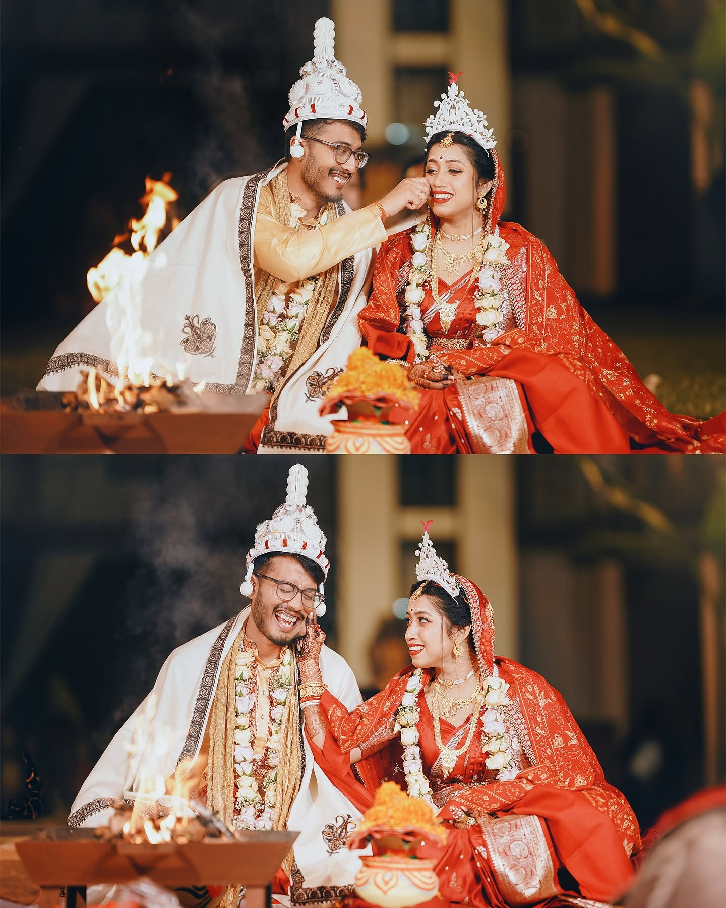

Listen first.
We start with what matters to you, not with a checklist of poses.

WEDLOCK PHOTOGRAPHY
Wedding photographs and films made to bring you back to the way it felt.
We photograph the little things that make a day yours — the pause before the vows, the hand that reaches without thinking, the people who make the room feel like home.
Enough direction to make you feel incredible. Enough space for the honest moments to happen.
Discover the Wedlock way ↗
Not everything needs to be loud to be remembered.

Real Wedlock films, placed inside the story. Press play when you want the day to move again.
Atmosphere, movement and the people you will want to hear and see again.
The photographs matter. So does how you feel while making them.
We start with what matters to you, not with a checklist of poses.
When direction helps, we give it. When the moment is already right, we let it happen.
People, details, atmosphere and movement — the story is bigger than the ceremony.
The finished gallery should bring the day back, not simply prove that it happened.

A wedding is a collection of small human moments. Our approach is built around seeing them — beautifully, honestly and without turning your day into a performance.
From the quiet frames to the loudest celebrations, we want the finished story to feel unmistakably yours.
Tell us about your date, your people and what you want to remember.
Check your date ↗